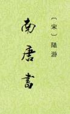

| 史籍 > |
| 南唐书 |
| [宋]陆游 编撰 |
|
《南唐书》，纪传体断代史，18卷，其中本纪3卷、列传15卷。陆游认为马令的《南唐书》未尽其善，于是对其删繁补遗，重加编撰，仍名为《南唐书》。陆游在撰写此书时，提出的修史原则是：“以耳目所接，察隧碑行述之谀辞；以众论所存，刊野史小说之谬妄。取天下之公，去一家之私”。该书叙述简赅有法，极为后人推崇，刊印、校注者甚多。 元天历初，戚光为之音释一卷，程塾等校刊，赵世炎作序。清道光二年（1822年）有绿签山房刻本，附嘉庆时汤运泰《南唐书注》十八卷、《唐年世总释》一卷和《州军总音释》一卷。1915年有刘氏嘉业堂刻本，附康熙时周在浚《南唐书注》十八卷及刘承乾《南唐书补注》十八卷。现存最早本为明嘉靖四十三年钱谷抄本。 此本整理，以原18卷分列于前，又厘之为117传列于后，以便查找。（2021/5/23） |
 |